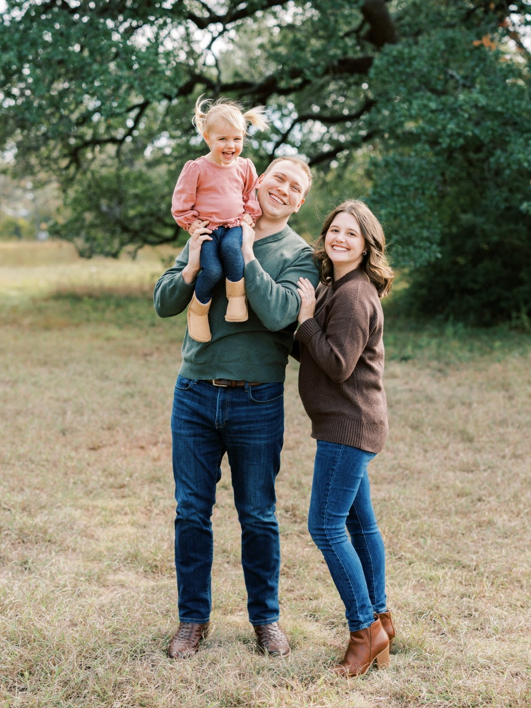

Street-level, local intelligence paired with institutional-quality research
Larger firms are structurally constrained: their overhead requires larger deals, and their decision-making typically optimizes for consensus over conviction. We're built differently: small team, no committee, no mandate to chase scale. This lets us pursue smaller, more complex, or less conventional opportunities on their merits.
Querencia
A querencia is a place where one feels secure, a place from which one's strength of character is drawn. It's a place in which we know exactly who we are, and from which we speak our deepest beliefs.
A second definition, from Hemingway
In Hemingway's Death in the Afternoon, he described it as a place the bull naturally wants to go in the ring, a preferred locality… It is a place which develops in the course of the fight where the bull makes his home. It does not usually show at once, but develops in his brain as the fight goes on. In this place he feels that he has his back against the wall and in his querencia he is inestimably more dangerous and almost impossible to kill.

Matt Taylor
As Managing Principal, Matt is responsible for all aspects of investment strategy, sourcing, capital formation, and asset management.
Prior to forming the firm, Matt spent more than 11 years honing his craft at boutique, hands-on, local investment firms Wayfinder Real Estate and Artesia Real Estate. At these firms, Matt had the opportunity to oversee and execute transactions across a wide swath of product types and geographies, but more valuably to have acted as an asset manager in the day-to-day operations of every asset in these portfolios.
Matt has overseen and executed $600MM+ worth of commercial real estate transactions across 130 properties, investing $220MM+ of capital into 33 properties. These properties included 1,535 multifamily units, 510 hotel rooms, 240K square feet of adaptive re-use, creative office projects and 140 acres of raw/covered urban infill land housing 1.5MM square feet of cash-flowing buildings (primarily retail, industrial deals to be redeveloped). These investments were located in Austin, Salt Lake City, Denver, Raleigh-Durham, Charlotte, and Nashville — alongside the occasional adjacent market.
Matt and his wife, Macey, whom he met on a real estate case competition team while studying at UT together, live in Bee Cave with their two children, Margot and Luke. Macey is a CPA and is also "in the industry" as the Controller at Timberline Real Estate Partners, an Austin-based private equity real estate company, making them wonderful dinner guests (as long as you don't want to talk about anything else!).
Outside of work, Matt sits on the board of UT Austin's Real Estate Finance and Investment Center and is heavily involved with mentoring undergraduate and MBA students.